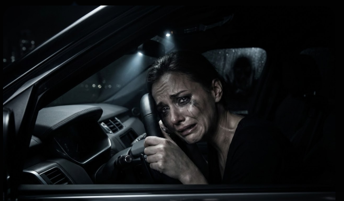
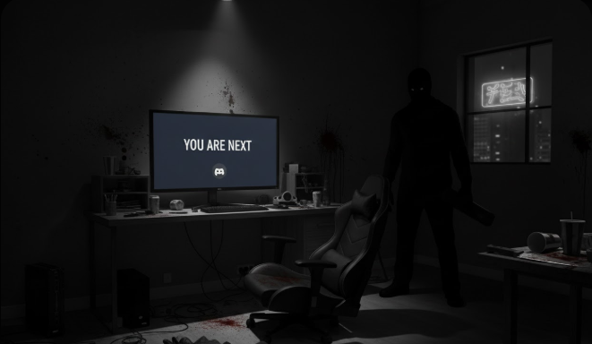

Projet
Projet Jacques - ARG horrifique audio multi-canaux sur Discord
Je suis porteur du projet. J’en assure la programmation, le game design, la narration et une partie des animations, pendant que je travaille avec plusieurs voix off, un ingénieur son et un musicien de l’industrie du cinéma.
Objectif : concevoir un ARG Discord audio multi-canaux orienté horreur psychologique, où l’expérience passe par l’audio, les salons, les rôles, les choix, les indices et parfois une application web complémentaire, le tout relié par un bot Discord.
Le projet est gratuit sous licence pour l’instant. Je ne pars ni d’une logique purement top-down, ni d’un assemblage bottom-up de features. Mon point de départ est une intention émotionnelle, puis je construis autour d’elle un ensemble de mécaniques, d’interactions Discord, d’audios et d’énigmes cohérentes avec cette direction.



Intention
Le bot n’est pas une fin en soi : c’est la couche d’orchestration. Le vrai sujet du projet, c’est la mise en place d’une expérience où l’audio, les temps d’attente, les salons verrouillés, les faux choix, les rôles et les glitches servent directement la mise en scène.
Dispositif actuel
Aujourd’hui, le projet existe surtout comme un prototype avancé sur Discord. Le bot gère déjà l’onboarding, les avertissements de contenu, la vérification d’âge, les rôles de progression, le lancement de la partie, certains embranchements narratifs, ainsi que l’envoi d’audios et d’images dans les bons salons. Certaines énigmes peuvent ensuite déborder vers un visuel spécifique ou une app web complémentaire.
Ce qui est déjà prototypé
- Entrée en partie : avertissement contenu choquant, contrôle d’âge, conseil PC et casque.
- Progression guidée : attribution de rôles, verrouillage de salons et transitions d’un chapitre à l’autre.
- Choix interactifs : embranchements via interactions textuelles, boutons Discord et faux dilemmes.
- Diffusion d’assets : envoi d’audios, d’images, de messages en thread et logs techniques.
Narration
La structure prévue repose sur plusieurs points de vue et une méta-narration forte. Samuel entre en contact avec le joueur, puis le projet bascule vers d’autres personnages comme Céline, Richard, Sandra ou Jean Berlac, jusqu’à faire de Jacques une menace qui déborde vers la réalité du joueur. Toute l’écriture est pensée pour faire monter progressivement la tension.
Collaboration
L’audio est la matière première du projet. Je travaille avec plusieurs acteurs voix off, un ingénieur son et un musicien qui travaille dans l’industrie du cinéma. De mon côté, je fais la programmation, le game design, la narration et une partie des animations, encore en cours.
Ce que je fais directement
- Programmation : bot Discord Python, logique de progression, déclenchements, envoi d’assets et outils d’admin.
- Game design : structure des chapitres, dilemmes, circulation multi-salons, timings de peur, logique des indices.
- Narration : architecture globale, meta-narration, personnages, progression dramatique et cohérence du projet.
- Animations : une partie est encore en cours de production.
Statut actuel
Le projet est en cours et reste pour l’instant un prototype narratif et technique. Le bot, plusieurs audios, des scripts et des énigmes existent déjà, mais l’expérience complète n’est pas encore terminée. C’est surtout un projet de convergence entre narration, horror design, programmation et mise en scène sonore.